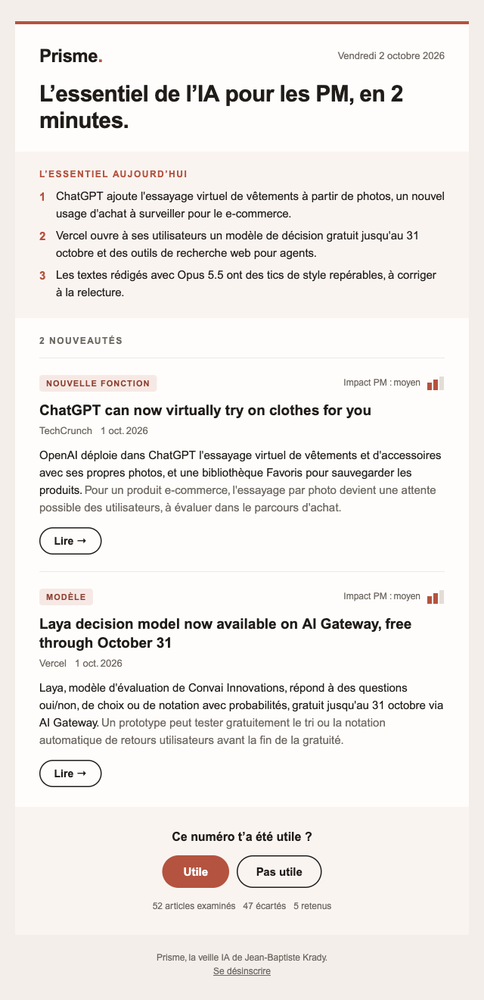

À quoi ressemble un numéro.
Un extrait du numéro du 2 octobre 2026.
- L’essentiel en 3 phrases.Ce qu’il faut retenir aujourd’hui, avant même de défiler.
- 5 nouveautés au plus.Lancements, nouvelles fonctions, modèles, études : rien d’autre.
- Ce que ça change pour un PM.Chaque article tient en deux phrases, avec un impact noté de faible à fort.

Questions.
Prisme est en bêta : tes retours décident de la suite.
Qui est derrière Prisme ?
Jean-Baptiste Krady, Product Manager. Prisme est un projet personnel : un agent Claude, sa méthode et des circuits n8n. Le code est public sur GitHub.
Combien ça coûte ?
Rien. Prisme est gratuit.
Que devient mon adresse e-mail ?
Elle sert uniquement à t’envoyer Prisme. Elle n’est ni vendue ni partagée, et aucun pixel ne suit l’ouverture de tes mails. Pour toute question : jeanbaptiste.krady@icloud.com.
Comment me désinscrire ?
Chaque mail se termine par un lien « Se désinscrire ». Un clic, et c’est fini.
Comment ça marche